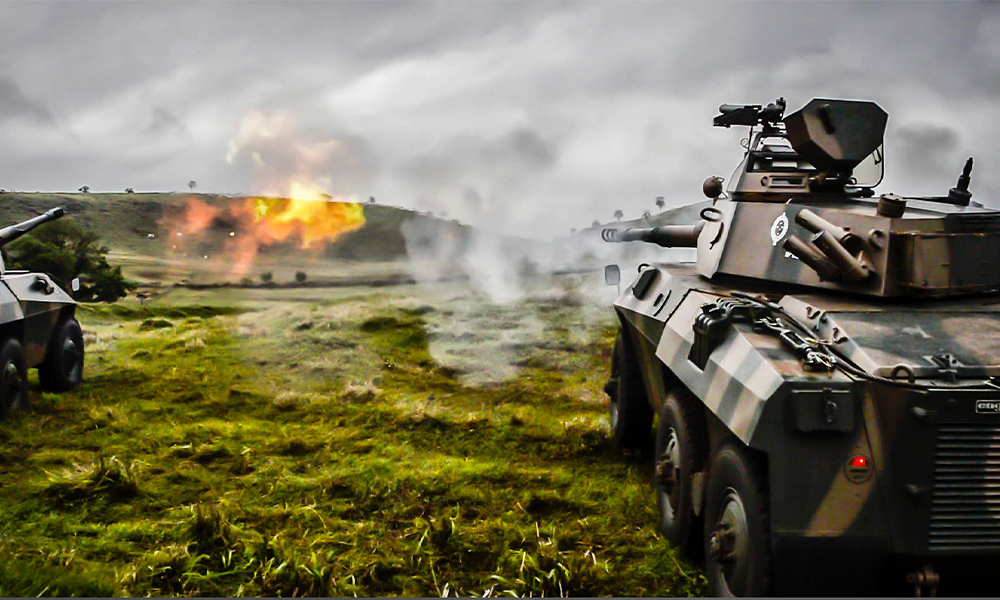
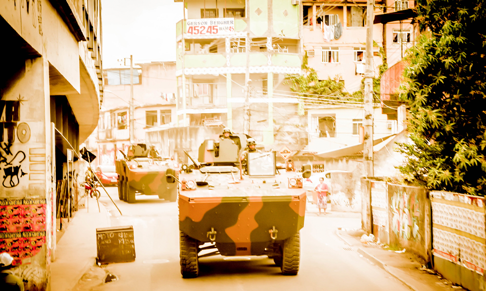

Viaturas e Blindados do Exército Brasileiro
O Exército Brasileiro possui uma vasta frota de viaturas e blindados, incluindo veículos blindados de combate (VBC) como os carros de combate (VBC CC) e blindados de transporte de pessoal (VBC Fuz). A frota também inclui veículos multitarefa como o "Guaicurus" e outros modelos como o "Urutu", "Cascavel", "Guarani" e "Lince". Detalhamento: Carros de Combate (VBC CC): O Exército está em processo de compra de novos carros de combate pesados e também planeja adquirir blindados de transporte de tropas (VBC Fuz). Viaturas Blindadas Multitarefa Leve Sobre Rodas (VBMT LSR): O "Guaicurus" é uma das viaturas blindadas multitarefa adquiridas recentemente pelo Exército. A VBMT LSR "Guaicurus" tem como objetivo principal o transporte de tropas, suporte em operações e está equipada com sistemas automatizados de armas e comando. Outros Modelos: Além dos "Guaicurus", o Exército também utiliza veículos blindados como o "Urutu", "Cascavel", "Guarani" e "Lince". Modernização da Frota: O Exército está investindo na modernização da sua frota, incluindo a aquisição de veículos blindados com tecnologia de ponta. A compra de 420 viaturas "Guaicurus" faz parte de um programa estratégico para fortalecer a capacidade de defesa do país. Fabricação Nacional: Parte da aquisição de blindados visa fortalecer a Base Industrial de Defesa (BID) brasileira, incentivando a construção de infraestrutura e a fabricação de componentes em território nacional. Importância dos Blindados: Os blindados são essenciais para o transporte e apoio de tropas, proteção contra ameaças e realização de operações militares em diversas situações. Em resumo, o Exército Brasileiro possui uma variedade de viaturas e blindados para atender às suas necessidades operacionais, incluindo veículos de combate, transporte de pessoal e multitarefa. A frota está em constante evolução, com a aquisição de novos modelos e a busca por tecnologia de ponta.

